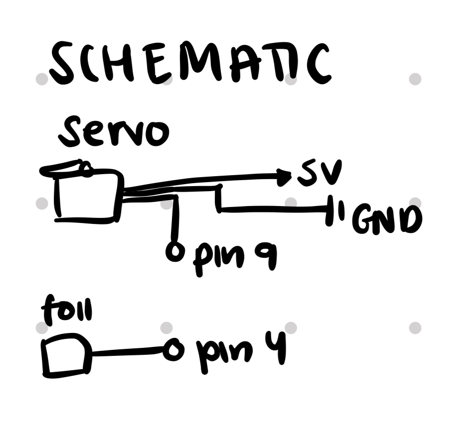

My Arduino Board & Schematics
My schematics for Servo motor & capacitive touch sensor!
Here is all the documentation for assignment 4!
My schematics for Servo motor & capacitive touch sensor!
<h1>My Arduino Code!</h1>
<p>
// cap sensor: https://web.archive.org/web/20160408011141/http://playground.arduino.cc/Main/CapacitiveSensor
// servo: https://dronebotworkshop.com/servo-motors-with-arduino/
#include // including servo library
#include // including cap sensor library
CapacitiveSensor cs_4_2 = CapacitiveSensor(4, 2); // set up cap sensor
Servo myservo; // set up servo
unsigned long csSum = 0; // keep track of sensor touches
int pos = 0; // position of servo
int sweepDir = 1; // 1 = forward, -1 = backward
bool sweeping = false; // tracking whether servo is moving
bool lastTouch = false; // check for previous touch
void setup() { // set up function
Serial.begin(9600); // start serial
myservo.attach(9); // attach servo to pin 9
myservo.write(0); // rest position
}
bool isTouched() { // function for if cap sensor is touched
long cs = cs_4_2.capacitiveSensor(5); // sensor resolution is 5
if (cs > 100) { // arbitrary number to screen for noise
csSum += cs; // add sensor reading to cssum
if (csSum >= 3800) { // if the sensor is touched (cssum is greater/equal to threshold)
csSum = 0; // reset cssum
cs_4_2.reset_CS_AutoCal(); // stops readings
return true; // returns that the sensor has been touched
}
} else { // otherwise
csSum = 0; // timeout caused by bad readings
}
return false; // return that sensor hasnt been touched
}
void loop() { // main loop
bool touched = isTouched(); // stores value returned from istouched function
if (touched && !lastTouch) { // toggle sweeping on each fresh touch
sweeping = !sweeping; // turn on/off
Serial.println(sweeping ? "Sweeping started" : "Sweeping stopped"); // print whether sweeping started/stopped
if (!sweeping) { // if not sweeping
myservo.write(0); // servo is in resting position
pos = 0; // servo pos is 0
sweepDir = 1; // reset sweeping direction
}
}
if (sweeping) { // move servo one step per loop, bouncing between 0 and 180
myservo.write(pos); // set servo position to pos
pos += sweepDir; // change pos by 1 (direction is dependent on whether it's >= 180 or <= 0)
if (pos >= 180) sweepDir = -1; // Reverse at top
if (pos <= 0) sweepDir = 1; // Reverse at bottom
}
lastTouch = touched; // set lasttouch to touched
delay(15); // delay
}
</p> My Arduino Code
My answers to the additional questions